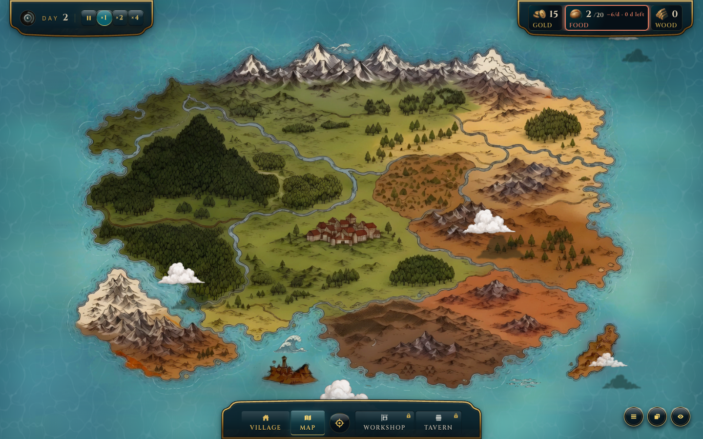
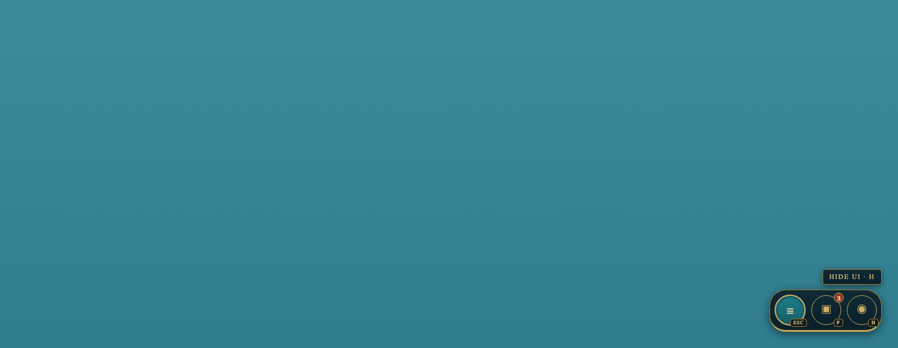
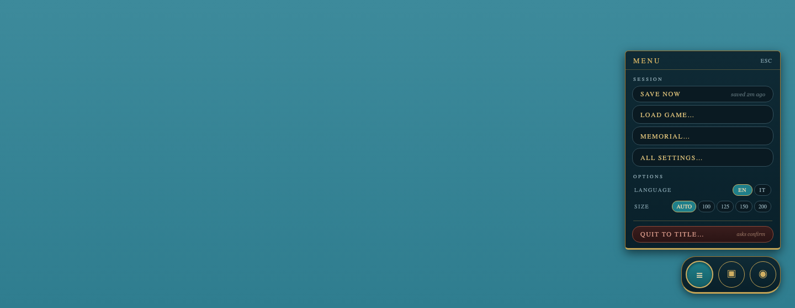
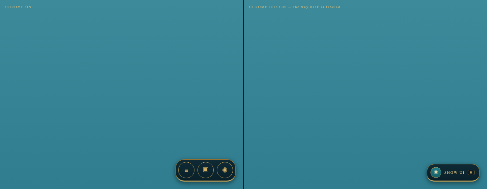

hud-corner



# hud-corner — critique digest (run `20261024-critique-hud-corner`) Verbatim R-282 prompt to chatgpt / claude / deepseek with the V1 shot set. Evidence: `shots/V1/*` — three 40px lacquer discs (menu · panels · eye), the ~690px game-menu dropdown, the panels dropdown, the lone eye-off pearl on empty sea. ## Provider outcome | provider | status | notes | |---|---|---| | claude | SUCCESS | full critique, saw all shots, measured px | | deepseek | SUCCESS (with misreads) | real critique, but calls the game "dotAGE", reads the eye disc as a menu toggle, proposes Unity UXML code (wrong stack — we are React/CSS) | | chatgpt | **DECLARED FAILURE** | 4 attempts: T-001/T-002 → «Impossibile caricare questa risposta»; T-003/T-004 → the model never saw the images and produced continuation fragments asking for screenshots. Fragments kept in `chatgpt.md`, not used. | ## Convergence (both real critiques agree) 1. **The game-menu dropdown is an undifferentiated dump** — ~20+ rows mixing panels / session / options in one list; ~77% of viewport height, no max-height/scroll → overflows at 1366×768 or 125–150% scale. Claude P0, deepseek "monolite". 2. **Hide-HUD is unsafe as designed** — icon-only toggle whose glyph shows state not action; restore affordance is a camouflaged ~40px disc; while hidden, critical info (starving village) is invisible although the sim keeps running. Claude P0. 3. **No visible control states** — triggers don't change when their popover is open, no focus ring, no unread badges. 4. **Icon semantics are off** — overlapping-squares reads as "copy", not "panels"; eye glyph ambiguous (deepseek misread it entirely, which is itself evidence). 5. **Small targets/text** — 40px discs pass WCAG 2.5.8 (24px) but not Material 48dp touch guidance; ~12px tracked caps at the edge of Steam Deck legibility. 6. **Quit sits unguarded** next to benign rows, same style, no confirmation affordance signaled (no ellipsis). ## Preserved disagreements - **Panel-list duplication**: Claude flags the PANELS section inside the game menu duplicating the panels menu as the #1 structural defect → single source + dock. Deepseek doesn't notice the duplication and instead proposes tabbed reorganization of the same monolith. - **Where menu lives**: deepseek wants it top-right near resources as a gear icon; Claude keeps it bottom-right but splits concerns (panels → always-visible dock; system → Esc pause dialog). - **Stack**: deepseek's code is Unity UXML/USS — not applicable; Claude's is React/CSS and maps to our primitives. ## Facts a critique got wrong (do not propagate to mockups) - deepseek: "dotAGE", eye=menu toggle, Unity code — discard. - Claude: "no tooltip or hotkey on the trigger" — wrong, `HudTooltip` exists on all three (not visible in stills); "Esc doesn't open the menu" — wrong, Esc already opens it (HUD-3 = P1); "Director/Tuning player-facing" — dev build only. - Claude: the restore pearl is reachable; "camouflaged" is fair, "unfindable" is not — it stays rendered by contract. ## Mockup-relevant takeaways (within Director rulings: no inner halo, no hanging hardware) - M1 **Dock + pressed states**: cluster as one lacquer dock; pressed disc = teal fill + brass inner line; badges allowed. - M2 **Split menu**: popover → sectioned plaque with a real heading row, max-height + scroll, danger-separated Quit, dev rows gated. - M3 **Safe hide**: hidden state keeps a labeled chip («Show UI · H»), not a bare glyph.
Raw: .mw/ui-catalog/components/hud-corner/critiques/ + mockups/ · status: in_review